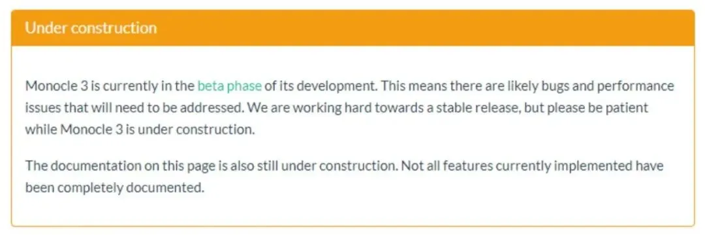
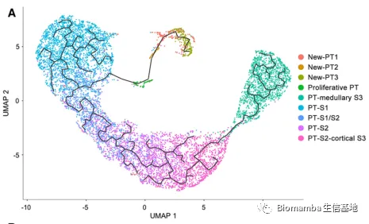
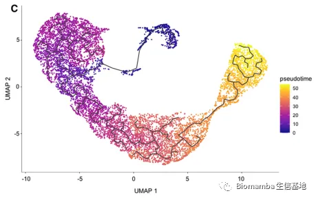

终于读到一篇用monocle3做拟时序的文章
原文：https://mp.weixin.qq.com/s?__biz=MzAwMzIzOTk5OQ==&mid=2247500192&idx=2&sn=b30f8f489695be29df65dc8b60858264&chksm=9b3cb8f0ac4b31e6561aba7bbaf7305e3bf1ca07acbd21aa16cd50ad6a0909f2fa4bff2d295b#rd 合集：文献速递

在去年7月的时候我们拟时序的教程就把monocle2、3部分都介绍完了，当时Biomamba就表示发表的文献还都是以monocle2为主流，没想到目前我读过的文章依旧是以monocle2为主，去除那些我刻意检索monocle3的文章，我至今方才读到一篇通过monocle3完成拟时序分析的单细胞论文，题为Single-Nucleus RNA Sequencing Identifies New Classes of Proximal Tubular Epithelial Cells in Kidney Fibrosis ，投稿日期为2020年的八月[1]。
monocle3发布了已经有相当一段时间了，至于为什么现在文章中的拟时序分析以monocle2为主，我想最重要的原因可能还是用monocle3完成分析的文章大部分都还在稿件准备 和审稿阶段 ，我依然相信明年和后年会成为monocle3的主战场。当然，这可能也不是主要原因，我们更应该关注monocle2与3的异同，我在做教程时就我就枚举过monocle2与3的优缺点：
monocle3的缺点
目前monocle3已经更新到 β 版本了，作者在官网也承认了缺点[2]，monocle3 α 已经是不推荐使用的，可能会存在bug，但是monocle3 β 仍然处于搭建中的状态，也就是说monocle3仍然是可能存在bug的，并且我们之前讲绪论的时候说到monocle1、2都发表在了Nature系列之上，但是monocle3迟迟没有发表，并且目前发表的文章还是使用monocle2的比较多，monocle3的不稳定性可能是重要原因。
官方表述如下：

monocle3的优点
咱们抛开可能存在的bug 不谈，monocle3相较于monocle2具有以下几点优势：
(1)最大的优点就是计算量 变大了，可以处理百万 级别的单细胞数据集，也就是说整个器官、甚至整个胚胎的矩阵交给monocle3处理完全没压力。
(2)代码结构性优化：这点我要吐槽 一下，monocle系列的语法我一直觉得很奇怪，默认参数也很不人性化
(3)支持UMAP算法的降维，这个也非常Nice，速度比tSNE快的不是一星半点。
(4)支持多谱系的拓扑结构：换句话说拟时序的轨迹可以做的很复杂
(5)相较于原来的RGE算法，新的approximate graph abstraction 能够计算不连续的、平行的拓扑结构
(6)新的基因表达量计算及差异分析方法被引入，也就是说原来的differentialGeneTest()和BEAM()可以被替代。
(7)可以像Seurat的多样本整合一样对拟时序对象进行整合：这个功能可以说是刚需了，换句话说，如果你有合适的、已构建好拟时序的参考数据集，可以直接把自己的数据跟参考数据集进行投影、比对。
(8)数据整合时也可同时加上注释：这有点类似于Seurat中的TransferData，可以利用已经注释好的参考数据给现行数据添加注释。
(9)对monocle对象的读取、加载、转换做了一定的优化，我们后面可以看看效果如何
(10)优化了负二项分布模型：也就是说对处理count的优化
(11)可视化提供了3D 展示功能
总体来说monocle3给我的感觉主要是： 1、语法复杂、函数奇怪，似乎与monocle2完全不是一个团队开发出的产物。 2、算法与功能强大，但也意味着学习成本的提升3、最值得一提的功能是monocle3可以选取 细胞作为拟时序的起点/终点 ，这对半监督式的分析来说是个利好，比如今天读到的这篇文章就是指定了正常的肾小管细胞为起点，指定纤维化的肾小管细胞为终点，从而满足作者的分析需求。4、从个人感官上来说，这个轨迹图真的让我犯密恐。。。。。。



拟时序分析教程
B站连续播放起来比较方便：
https://www.bilibili.com/video/BV1br4y1x7Hf?p=1往期推送单细胞测序数据进阶分析—《拟时序分析》1.概论
单细胞测序数据进阶分析—《拟时序分析》2.monocle概论单细胞测序数据进阶分析—《拟时序分析》3.monocle2实操：完整版
单细胞测序数据进阶分析—《拟时序分析》4.初识monocle3
单细胞测序数据进阶分析—《拟时序分析》5.monocle3的降维、分群、聚类单细胞测序数据进阶分析—《拟时序分析》6.monocle3的拟时序分析
解决monocle2的orderCells报错的两种方法
一文搞定拟时序分析的下游可视化探索
参考：
[1]Lu YA, Liao CT, Raybould R, Talabani B, Grigorieva I, Szomolay B, Bowen T, Andrews R, Taylor PR, Fraser D. Single-Nucleus RNA Sequencing Identifies New Classes of Proximal Tubular Epithelial Cells in Kidney Fibrosis. J Am Soc Nephrol. 2021 Oct;32(10):2501-2516.[2]http://cole-trapnell-lab.github.io/monocle3/

如何联系我们
 公众号后台消息更新不及时，超过48h便不允许回复读者消息，这里给大家留一下领取资料、免费服务(有root权限的共享服务器,你没有体验过的全新版本!)的微信号 ，方便各位随时交流、提建议(科研任务繁重，回复不及时请见谅)。此外呼声一直很高的交流群 也建好了，欢迎大家入群讨论：永久免费的千人生信、科研交流群
公众号后台消息更新不及时，超过48h便不允许回复读者消息，这里给大家留一下领取资料、免费服务(有root权限的共享服务器,你没有体验过的全新版本!)的微信号 ，方便各位随时交流、提建议(科研任务繁重，回复不及时请见谅)。此外呼声一直很高的交流群 也建好了，欢迎大家入群讨论：永久免费的千人生信、科研交流群
大家可以阅读完这几篇之后添加给生信入门初学者的小贴士 如何搜索公众号过往发布内容

 您点的每个赞和在看，我都认真当成了喜欢
您点的每个赞和在看，我都认真当成了喜欢